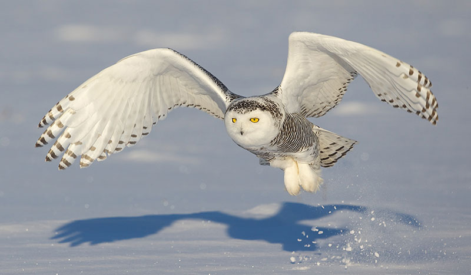
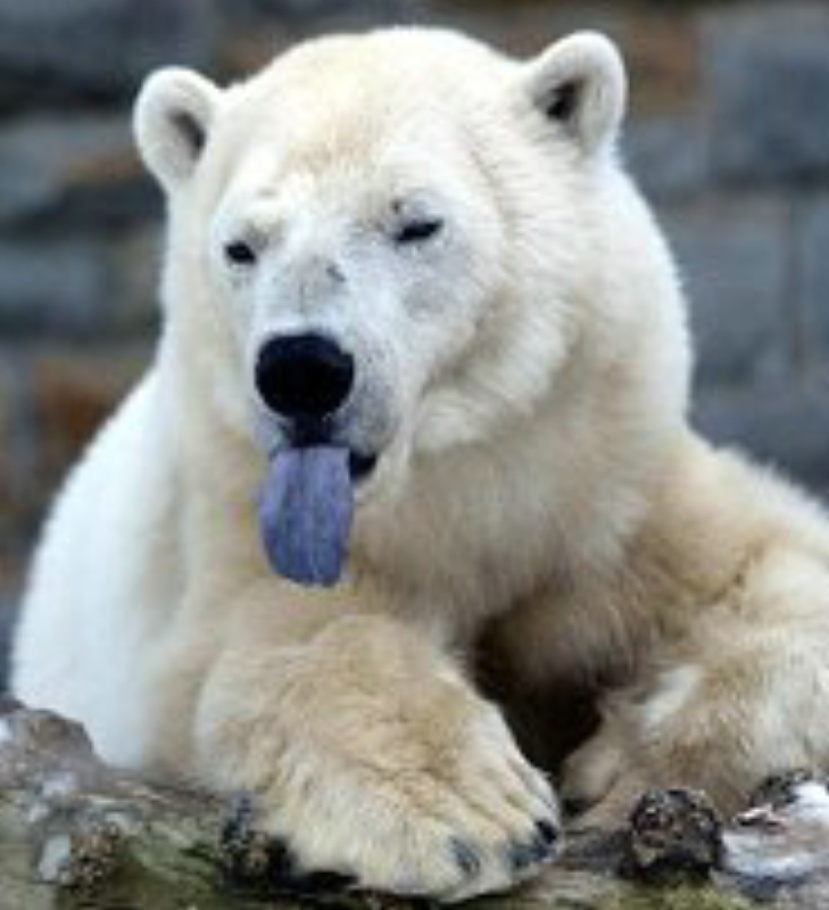
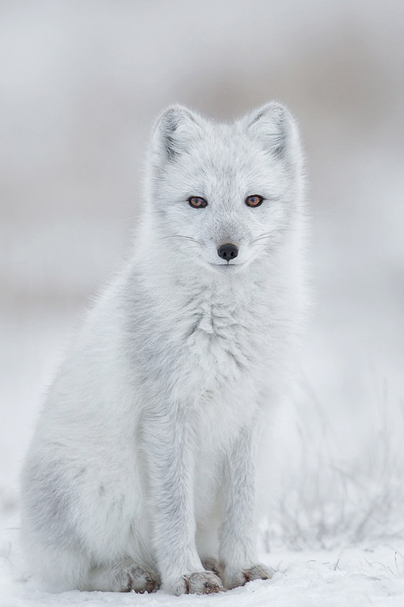
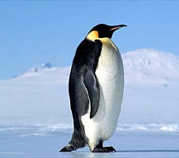

Polar regions distinguish from other regions mainly due to the low
temperatures and rough enviroment. However, in these extreeme
conditions live animals who have successfully adapted to them and
are interesting to explore. Some of them even cute.

Snowy Owl
Unlike most of the owls this one copes with extreeme enviroment. Snowy owls are native to the arctic, have thick fur (mostly white) and noble apperance. The magnificent look and ability to survive in extreemly low temperatures makes them мajestic yet still very cute.

Polar Bear
Massive, strong with killing instincts yet cute. Polar bears have no natural enemies (I wonder why). They live in the north pole where they can do fatty parties with Santa Claus. Their meals are usually seals so they can maintain their fat mass (same goes for Santa).

Polar Fox
It habits the north pole and it's fur has gone white due to Santa's contsant bullying. Every night they are forced to go to Santa's parties where they listen to chalga. They're smart but the old hag wants to make them stupid like himself. Save polar foxes fuck Santa.

Penguin
Penguins habit the south pole where they are safe from the polar bears and Santa. They live near the ocean since their diet is mainly (if not entirely) seafood. Penguins have religion in which they worship and thank gods for keeping them far away from Santa's chalga.